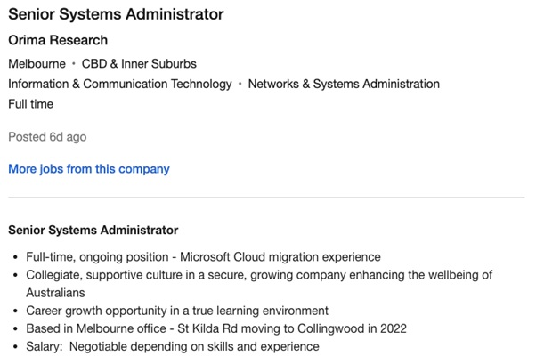
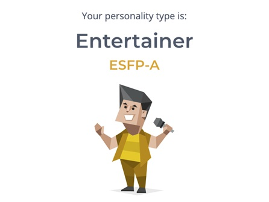

Personal Information
Hey! My name is Brian Rabino. My student number is S3851265, student email address is S3851265@student.rmit.edu.au. Please contact me if you have any questions about the project!
A bit about me... I'm 21 years old, Filipino, born and raised in the UK, and moved to Australia in 2014. However, I speak English and only understand a little Filipino. So far, I've completed VCE Year 12, and I am currently in my final year for my Bachelor in Information Technology. I found my favourite hobby, volleyball, last year when Victoria eased restrictions and I currently play in social competitions. I hope to play for state clubs next year!
Interest in IT
Information Technology
Originally inspired to enter the field through experiencing Virtual Reality software, I impulsively decided to transfer from a career in Science and Biomedicine to a career in software development. I transferred into a Bachelor of CS at RMIT, from a Bachelor of Science at The University of Melbourne. As I completed my CS degree throughout 2020, I took a myriad of IT subjects along the way, which gave me insight and understanding in the systems and networks field. Managing, configuring, and protecting computer systems had always interested me, and was a bright prospect as a future career upon graduating from RMIT. My IT experience is limited to building PCs, configuring Windows software from scratch, diagnosing and providing solutions to family/friends’ Windows devices.
I chose to transfer to RMIT as, during my research in the best Computer Science and Information Technology degrees, RMIT was always at, or near the top of the lists and rankings. Upon exploring the RMIT website and reading what the CS and IT degrees offer, and comparing these to other programs at different universities, I chose to enrol in RMIT for the best possible chance at preparing myself for the workforce.
Throughout my studies, I have experienced a wide range of areas in the IT industry, from cybersecurity and penetration testing to software programming and website development. In my last year, I expect to explore further into more advanced concepts of IT and gain a deeper understanding of management and configuration of computer and network systems, as well as how IT is used from a business standpoint.
Ideal Job
My ideal job would be a Senior Systems Administrator or equivalent. This job describes the overseeing of maintenance and configuration of organisational computer systems. Working solo or in a team of professionals, a Systems Administrator, or sysadmin, makes sure an organisation’s computer systems are meeting the needs and requirements, through troubleshooting, diagnosis, and maintenance of servers and networks.
[https://www.seek.com.au/job/56122588?type=promoted#sol=cdc3207c107cb789c48bbd8288eb5650ee5fcd3d]
This position is appealing as it sets a goal, career progression, and is generally what I am interested in in the IT industry. Through diligent routine, as well as unexpected situations, a sysadmin will provide an organization the solutions to their computing systems needs. This position takes years of experience, and such is a rewarding milestone which pays well.
The types of skills a sysadmin requires is a deep understanding and experience in top industry standard software, computer network and systems used in organizations, as well as extra skills such as leadership, sociability, adaptability, and reliability. For example, sysadmins who have:
- Experience in modern cloud technologies, such as AWS or Cisco Technologies
- Experience in infrastructure management such as upkeep and maintenance of patched and configured computer systems, as well as hardware and equipment
- Experience in cybersecurity and industry-standard protection in every layer of the OS model
- Experience in designing networks and network architecture
Although I do not have professional IT experience, I am planning to acquire an internship during or towards the end of my final year.
Personal Profile
MBTI Results
I think the MBTI results are a reasonable indicator for the type of person someone is, or even aspires to be. Personally, the type of person I am is largely accurate in the results of the test, and other friends also have results that I would consider true to their personalities.
In my opinion, these results may influence and reinforce my natural behaviour in a team environment as a more talkative, open and fun team member. Previous experiences and group projects I have participated in correlate to this.
A team should be a mix of likeminded people, as well as people who approach a problem differently, to cover all bases and provide a cohesive solution.
Learning Style Results
I think the MBTI results are a reasonable indicator for the type of person someone is, or even aspires to be. Personally, the type of person I am is largely accurate in the results of the test, and other friends also have results that I would consider true to their personalities.
In my opinion, these results may influence and reinforce my natural behaviour in a team environment as a more talkative, open and fun team member. Previous experiences and group projects I have participated in correlate to this.
A team should be a mix of likeminded people, as well as people who approach a problem differently, to cover all bases and provide a cohesive solution.